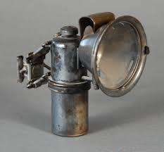

C'è stato un periodo nel quale (nella mia zona) tante famiglie contadine avevano in casa una bella latta piena di pezzi di carburo (di calcio, CaC2), che si presenta più o meno come dei "sassi" di forma irregolare.
Quando la provvista finiva si andava nella drogheria del paese e la si ricostituiva facilmente con pochissime lire al chilo.
A cosa serviva? Semplicemente ad alimentare delle caratteristiche lampade per la ricerca notturna delle chiocciole (per carità non confondiamo le chiocciole" con le "lumache", che sono tutt'altre bestie!) dopo una giornata piovosa.
Questi cercatori uscivano all'imbrunire con la loro potente fonte di luce di origine chimica e costeggiando le siepi tornavano poco dopo col loro molluschico bottino, fonte di proteine a buon mercato quando le proteine, diciamo quelle più appetibili, allora a buon mercato non erano.
La fiamma dell'acetilene, se ben regolata nel rapporto gas/aria è luminosissima (oltre che caldissima) e si presta egregiamente per l'illuminazione.
Le lampade più diffuse erano simili a questa a sinistra:

e questa lampada c'era pure identica (ma non così arrugginita!) anche a casa mia; ma come luce di emergenza, dato che nessuno dei miei famigliari è mai andato a cercar chiocciole.
Ed un reperto sopravvissuto per decenni era pure la vecchia lampada a carburo per la bicicletta di mio nonno, con la fiamma capace di resistere alle sue robuste pedalate... ecco com'era, foto a destra!
Con questi attrezzi io così facevo le prime fanciullesche e caute generazioni di acetilene, con conseguente stupore per la sua luce abbagliante, imparando contemporaneamente ad aver rispetto per questo gas che non scherza.
Dato che in rete si trova tutto quel che si vuole, dico solo due parole sul funzionamento, analogo sia per una piccola lampada come quella da bici che per un gasogeno industriale.
Il carburo di calcio reagisce vivamente con l'acqua secondo la reazione:
CaC2 + 2 H2O --> C2H2 + Ca(OH)2
Nel contenitore inferiore si mettevano i pezzi di carburo ed in quello superiore l'acqua; una piccola valvolina regolabile permetteva di far gocciolare l'acqua sul CaC2 e l'acetilene che si svolgeva veniva portata ad uno speciale beccuccio con due minutissimi forellini contrapposti con uno speciale angolo; questo artificio faceva sì che la fiamma fosse luminosissima e poco fuligginosa.
La quantità di luce seguiva direttamente la quantità d'acqua rilasciata: più acqua più luce, e viceversa, come un acceleratore.
Tenendo presente che un grammo di carburo sviluppa circa 300 ml di acetilene, con una manciata di "sassi" ed economizzando l'acqua si potevano avere ore di buona autonomia luminosa.
Ci sarebbe molto da dire sul buon vecchio carburo e la sua irrequietissima figlia acetilene con quel suggestivo odorino fosfinico, ma termino qui.
La prossima volta il protagonista della storiella sarà un semplice pezzetto di CaC2, ma un po' anomalo, non l'avevo mai visto così.